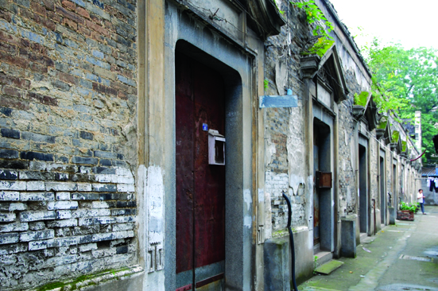

嘉兴市文物保护网 · 市级文物保护单位 · 2014-06-19 · 原文

秀州北弄石库门教师宿舍位于嘉兴市南湖区建设街道丁家桥社区秀州北弄1～12号，俗称“十间头”，建于清晚期。原为秀州中学外教及职工宿舍，解放战争期间曾作国民党军队伤员医疗场所。解放后，被政府接收，作为公租房。2006年，产权划归秀州中学，现仍有大量居民租住。建筑坐北朝南，砖木结构，占地面积1200平方米，通面阔60米，通进深20米。系二层二进楼房，共有十二开间，东西两侧设有二层厢房。建筑风格中西合璧，每间大门均为石库门，门头呈“人”字型，以欧式草纹装饰。屋顶为硬山顶，封火墙呈拱形。建筑内部被住户改动较大。该宿舍反映了特定历史时期的建筑风貌，保存较完整，对于研究嘉兴的近现代史及建筑形制，具有较高历史和科学价值。2000年公布为嘉兴市级文物保护单位。